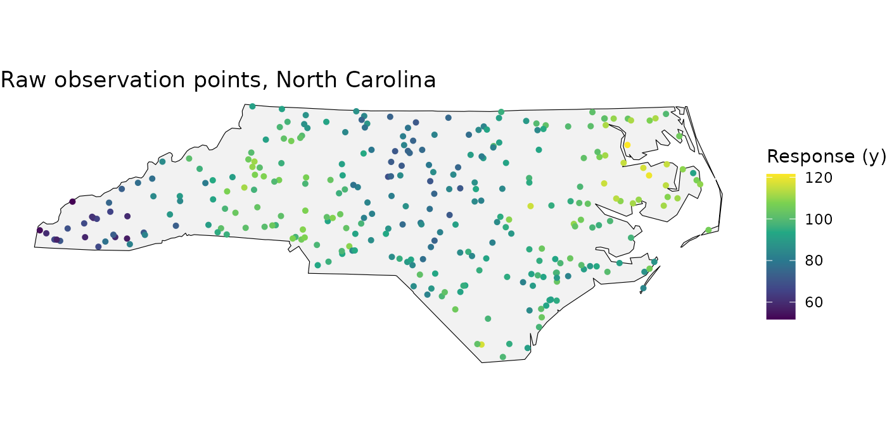
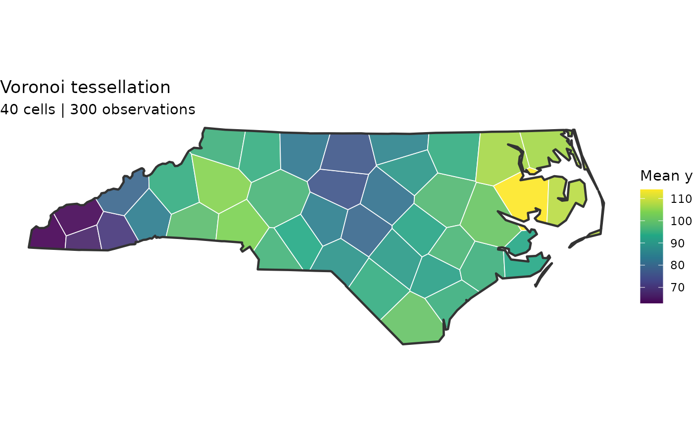
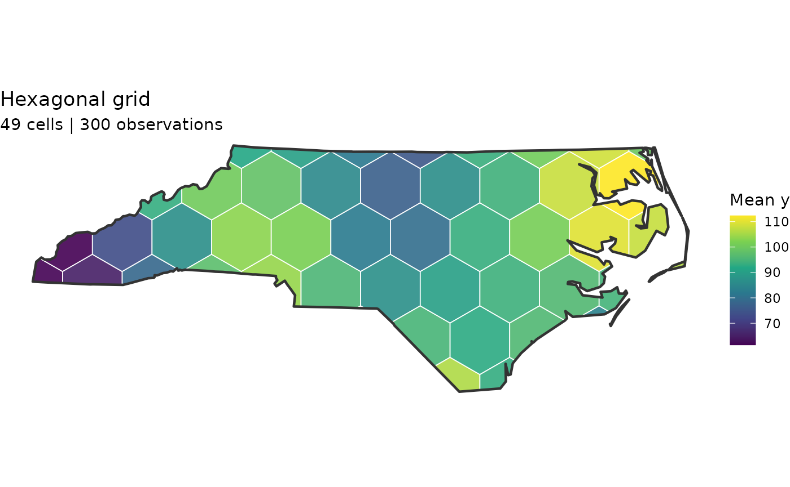
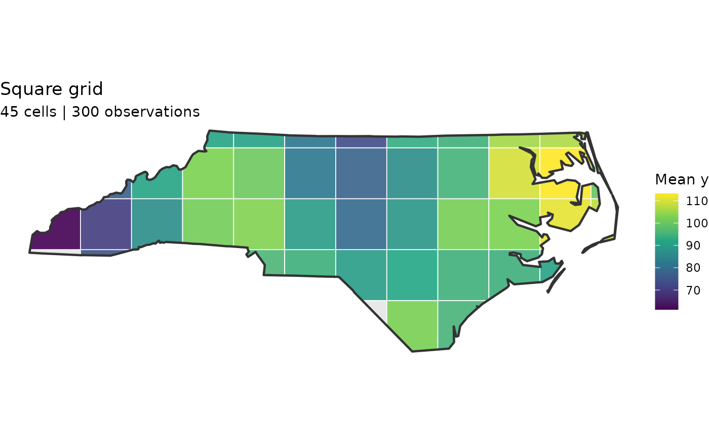
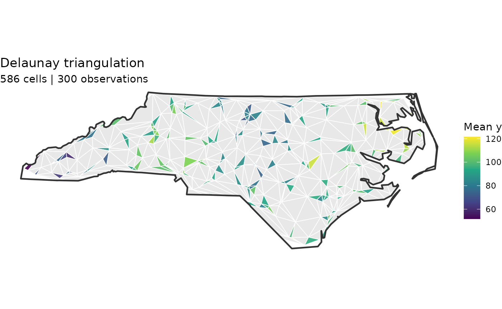
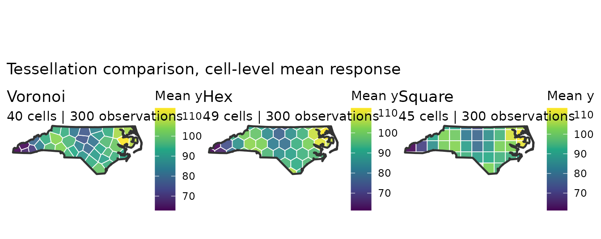
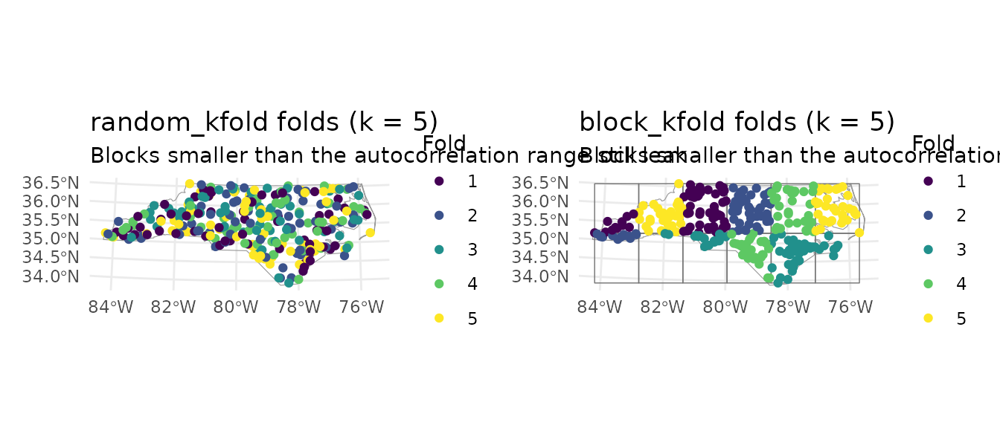
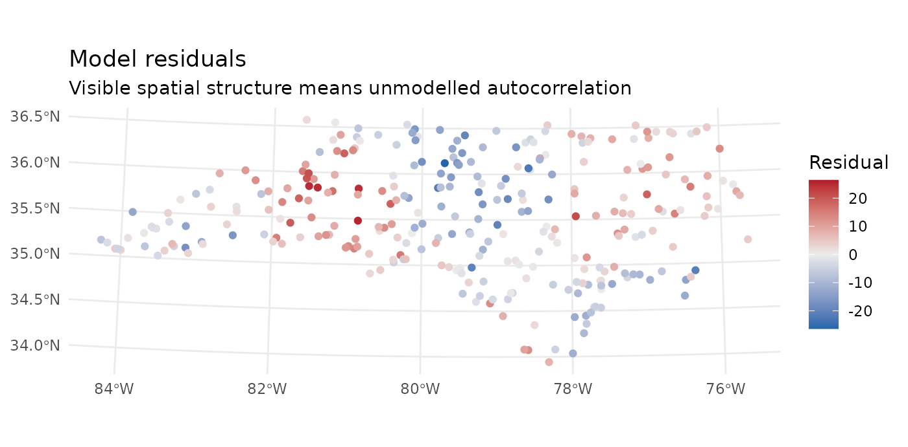
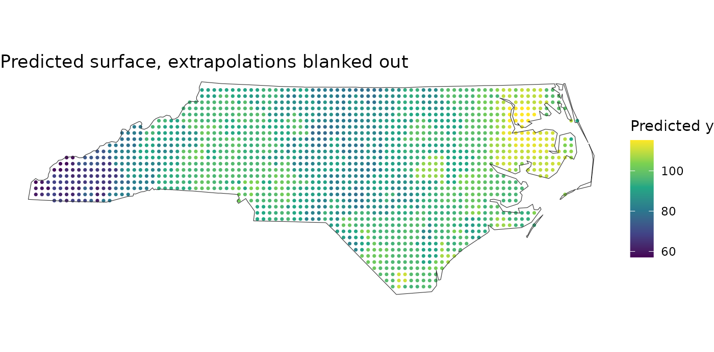

spatialkit: Tessellations, Spatial Cross-Validation and Models
Justin Chase
18 September 2026
Source:vignettes/spatialkit_nc_demo.Rmd
spatialkit_nc_demo.RmdOverview
This vignette generates synthetic spatial data over
North Carolina and walks through the spatialkit workflow
end to end:
- Build four tessellation types (Voronoi, hex, square, Delaunay)
- Assign points to cells and aggregate with
summarize_by_cell() - Draw choropleths of the cell-level mean response
- Estimate the autocorrelation range and build spatial CV folds
- Fit a model, and score it under blocked versus random folds
- Predict onto a surface and mark where that surface is extrapolation
Everything is self-contained — the boundary comes from the
nc.shp demo shapefile bundled with sf, so no
external files are needed.
Optional backends are checked at the top and every section that needs one is guarded, so this document renders with whatever you happen to have installed. This table always runs, even when the gate below it is shut – it is what says which backend is missing when the code stops producing output:
## package available used_for
## 1 ggplot2 TRUE all plots
## 2 geometry TRUE true Delaunay triangulation
## 3 ranger TRUE random forest backend
## 4 gstat TRUE variogram / autocorrelation range
## 5 GWmodel + sp TRUE GWR backend1. Packages and boundary
We load the North Carolina county boundaries shipped with
sf, dissolve them into a single state outline, and project
to NAD83 / North Carolina (ftUS) (EPSG:2264) so
distances are planar rather than angular. Every distance, bandwidth and
block size below is therefore in US survey feet, not
metres — projected does not mean metric, and the unit is whatever the
CRS says it is:
nc_counties <- st_read(system.file("shape/nc.shp", package = "sf"), quiet = TRUE)
nc_boundary <- nc_counties |>
st_union() |>
st_transform(2264) |>
st_as_sf()2. Synthetic observations
300 points inside the state boundary with two predictors and a spatially varying response:
-
elevation— gradient increasing west to east, plus noise -
pop_density— decays with distance from two fake “cities” -
y— driven by the two predictors plus a spatial field neither of them explains. That last term is deliberate: it is the unmodelled spatial structure that makes random cross-validation optimistic, and it is what section 5 measures.
n_points <- 300
pts_raw <- st_sample(nc_boundary, size = n_points, type = "random")
pts_coords <- st_coordinates(pts_raw)
x_coords <- pts_coords[, 1]
y_coords <- pts_coords[, 2]
elevation <- scale(x_coords)[, 1] * 500 + rnorm(n_points, 3000, 400)
city1 <- c(1530000, 550000) # Charlotte-ish in EPSG:2264
city2 <- c(2150000, 750000) # Raleigh-ish
dist_to_city <- pmin(
sqrt((x_coords - city1[1])^2 + (y_coords - city1[2])^2),
sqrt((x_coords - city2[1])^2 + (y_coords - city2[2])^2)
)
pop_density <- pmax(exp(-dist_to_city / 400000) * 5000 + rnorm(n_points, 200, 100), 10)
spatial_field <- 20 * sin(x_coords / 250000) * cos(y_coords / 250000)
y_response <- 50 +
0.01 * elevation +
0.005 * pop_density +
spatial_field +
rnorm(n_points, 0, 5)
points_sf <- st_sf(
y = y_response,
elevation = elevation,
pop_density = pop_density,
geometry = pts_raw
)
ggplot() +
geom_sf(data = nc_boundary, fill = "grey95", colour = "black") +
geom_sf(data = points_sf, aes(colour = y), size = 1.1) +
scale_colour_viridis_c(name = "Response (y)") +
theme_void() +
ggtitle("Raw observation points, North Carolina")
3. Four tessellations
3a. Voronoi from ~40 k-means seeds
Voronoi cells are built around seed points, not the
observations themselves. Seeding one cell per observation would give 300
cells each containing a single point — a nearest-neighbour interpolation
rather than an aggregation, with no within-cell variation to compute a
standard error from. get_voronoi_seeds() clusters the
observations first, so cell size follows sampling density.
seeds <- get_voronoi_seeds(
boundary = nc_boundary,
sample_points = points_sf,
method = "kmeans",
n = 40
)
tess_voronoi <- build_tessellation(
seeds, boundary = nc_boundary,
method = "voronoi", clip = TRUE, quiet = TRUE
)3b and 3c. Hex and square grids (~50 cells)
tess_hex <- build_tessellation(
points_sf, boundary = nc_boundary,
method = "hex", approx_n_cells = 50, clip = TRUE, quiet = TRUE
)
tess_square <- build_tessellation(
points_sf, boundary = nc_boundary,
method = "square", approx_n_cells = 50, clip = TRUE, quiet = TRUE
)All four methods return cells carrying a cell_id column;
the grid methods keep poly_id alongside it, holding the
same values.
names(tess_hex$cells)## [1] "poly_id" "geometry" "cell_id"3d. Delaunay triangles
method = "triangles" uses
geometry::delaunayn() when geometry is
installed. Without it, it does not error — it falls
back to sf::st_triangulate() (GEOS) on the point set and
logs a warning. That is still the Delaunay triangulation of the input
points; only the resolution of degenerate configurations can differ.
Because the two paths are not identical, this section is guarded on
geometry rather than on the call succeeding:
tess_tri <- build_tessellation(
points_sf, boundary = nc_boundary,
method = "triangles", clip = TRUE, quiet = TRUE
)
nrow(tess_tri$cells)## [1] 586
cat(sprintf(
"Voronoi: %d | Hex: %d | Square: %d | Triangles: %s\n",
nrow(tess_voronoi$cells),
nrow(tess_hex$cells),
nrow(tess_square$cells),
if (has_geom) nrow(tess_tri$cells) else "skipped (install 'geometry')"
))## Voronoi: 40 | Hex: 49 | Square: 45 | Triangles: 5864. Cell-level aggregation with summarize_by_cell()
assign_features_to_polygons() joins points to cells;
summarize_by_cell() does the aggregation — means, standard
deviations and standard errors for the response and every predictor,
plus n and cell_weight. There is no need to
write the group_by()/summarise() by hand, and
doing so loses the design-effect machinery below.
assigned <- assign_features_to_polygons(points_sf, tess_voronoi$cells,
polygon_id_col = "cell_id")
cell_stats <- summarize_by_cell(
assigned,
response_var = "y",
predictor_vars = c("elevation", "pop_density"),
id_col = "cell_id"
)
head(as.data.frame(cell_stats)[, c("cell_id", "n", "resp_mean_y",
"..sd_resp_y", "..se_resp_y")])## cell_id n resp_mean_y ..sd_resp_y ..se_resp_y
## 1 1 6 62.89141 7.074136 2.888004
## 2 2 7 63.36230 7.516155 2.840840
## 3 3 5 67.11282 8.521317 3.810849
## 4 4 5 70.34951 12.427812 5.557886
## 5 5 5 79.61205 5.327447 2.382507
## 6 6 4 84.14516 7.886035 3.943018The ..se_* columns are IID standard
errors at the default deff = 1, which is anticonservative
when points inside a cell are spatially correlated.
deff = "kish" applies Kish’s design-effect correction from
an estimated intra-class correlation, and
attr(., "deff_applied") records what was used:
cell_kish <- summarize_by_cell(
assigned,
response_var = "y",
predictor_vars = c("elevation", "pop_density"),
id_col = "cell_id",
deff = "kish"
)
deff <- attr(cell_kish, "deff_applied")
cat(sprintf("method = %s | ICC(response) = %.3f | median design effect = %.2f\n",
deff$method, deff$icc_resp, stats::median(deff$deff, na.rm = TRUE)))## method = kish | ICC(response) = 0.742 | median design effect = 5.45
# Inflation of the response standard error, cell by cell.
summary(cell_kish$`..se_resp_y` / cell_stats$`..se_resp_y`)## Min. 1st Qu. Median Mean 3rd Qu. Max.
## 3.535 4.271 4.595 4.705 5.183 6.193Choropleths
#' Assign points to cells, summarise, and draw a choropleth.
make_choropleth <- function(tess, boundary, points, title = NULL) {
cells <- tess$cells
assigned <- assign_features_to_polygons(points, cells, polygon_id_col = "cell_id")
stats_df <- summarize_by_cell(assigned, response_var = "y",
id_col = "cell_id")
cells <- left_join(cells, as.data.frame(stats_df)[, c("cell_id", "resp_mean_y")],
by = "cell_id")
plot_tessellation_map(
tessellation_sf = cells,
boundary = boundary,
fill_col = "resp_mean_y",
palette = "viridis",
tile_alpha = 0.9,
outline_col = "white",
outline_size = 0.3,
boundary_col = "grey20",
boundary_size = 0.8,
legend_title = "Mean y",
title = title,
subtitle = sprintf("%d cells | %d observations",
nrow(cells), nrow(points))
)
}
make_choropleth(tess_voronoi, nc_boundary, points_sf, "Voronoi tessellation")
Voronoi choropleth
make_choropleth(tess_hex, nc_boundary, points_sf, "Hexagonal grid")
Hex grid choropleth
make_choropleth(tess_square, nc_boundary, points_sf, "Square grid")
Square grid choropleth
make_choropleth(tess_tri, nc_boundary, points_sf, "Delaunay triangulation")
Delaunay choropleth
library(patchwork)
(make_choropleth(tess_voronoi, nc_boundary, points_sf, "Voronoi") |
make_choropleth(tess_hex, nc_boundary, points_sf, "Hex") |
make_choropleth(tess_square, nc_boundary, points_sf, "Square")) +
plot_annotation(title = "Tessellation comparison, cell-level mean response")
All three at a glance
5. Spatial cross-validation
This is the part the rest of the package exists to support.
5a. How far does correlation reach?
estimate_sac_range() fits an omnidirectional variogram
and returns the effective range in CRS units — here, US survey feet. It
also fits the four principal directions and reports their ranges in the
directional attribute (with their largest-over-smallest
ratio in anisotropy), but only as a diagnostic: each
direction sees about a quarter of the point pairs, the maximum of four
such fits is biased upward, and the windows are fixed to the coordinate
axes, so nothing built from them is invariant to rotating the layer. The
all-pairs fit is the estimate whenever it is usable; the directional
maximum stands in for it only when the all-pairs fit fails, and the
anisotropy_used attribute is TRUE in that case
alone. If you know the field is anisotropic, size blocks from
max(attr(sac, "directional")) explicitly. It returns
NA (still classed sac_range, so it prints as a
bare NA) when the empirical variogram never reaches a sill,
because an unidentified range must not be used to size blocks.
sac <- estimate_sac_range(points_sf, response_var = "y",
predictor_vars = c("elevation", "pop_density"))
sac## NA
## directional: 0 deg = 22475325 (past the fitted lags), 45 deg = 1243020, 90 deg = 1591410 (past the fitted lags), 135 deg = 3346918 (past the fitted lags)
if (is.na(sac)) {
cat("no identified range:", attr(sac, "rejected_reason"), "\n")
} else {
cat(sprintf("range = %.0f ft; anisotropy ratio %.2f; used %s\n",
as.numeric(sac), attr(sac, "anisotropy"),
attr(sac, "anisotropy_used")))
}## no identified range: fitted range exceeds the largest lag fittedThe fit is attached either way, so
plot(fit, type = "variogram") on a fitted model can draw
the curve and let you judge it rather than trust it — the distance axis
is labelled in the units of the CRS the variogram was fitted in, and a
fit that did not converge says so in the caption. A rejected range must
not be handed to make_folds(auto_range = TRUE), which is
why it comes back NA rather than as a long range.
5b. Two fold schemes on the same data
folds_random <- make_folds(points_sf, k = 5, method = "random_kfold", seed = 42)
folds_blocked <- make_folds(points_sf, k = 5, method = "block_kfold", seed = 42)
c(random = folds_random$k, blocked = folds_blocked$k)## random blocked
## 5 5plot_folds() is the fastest way to see whether the
blocks actually separate the data or are smaller than the
autocorrelation range and therefore leaking:
library(patchwork)
plot_folds(folds_random, points_sf, boundary = nc_boundary) +
plot_folds(folds_blocked, points_sf, boundary = nc_boundary)
5c. The number the fold scheme changes
fit_rf_model() and cv_rf() need
ranger. include_coords = TRUE hands the forest
the coordinates, which lets it memorise the training surface — the
failure mode the default (FALSE) exists to prevent, and the
one random folds cannot see. Scoring the same model on both fold schemes
shows the size of the gap:
rf_args <- list(include_coords = TRUE, num_trees = 300, seed = 1)
cv_random <- do.call(cv_rf, c(list(points_sf, "y", c("elevation", "pop_density"),
folds = folds_random), rf_args))
cv_blocked <- do.call(cv_rf, c(list(points_sf, "y", c("elevation", "pop_density"),
folds = folds_blocked), rf_args))
data.frame(
folds = c("random_kfold", "block_kfold"),
R2 = c(cv_random$overall$R2, cv_blocked$overall$R2),
RMSE = c(cv_random$overall$RMSE, cv_blocked$overall$RMSE)
)## folds R2 RMSE
## 1 random_kfold 0.7945653 6.089268
## 2 block_kfold 0.6310837 8.997421Random folds report R2 = 0.795; blocked folds report 0.631 on the same fitted model — a drop of 21% of the reported skill.
The blocked estimate is the one to report. The random one describes interpolation between points you already have, which is not the task.
6. Fitting a model
rf_fit <- fit_rf_model(points_sf, response_var = "y",
predictor_vars = c("elevation", "pop_density"))
rf_fit## <Random Forest (ranger)> spatial model fit
## Formula : y ~ elevation + pop_density
## n : 300
## CRS : EPSG:2264
## Trees : 500 (mtry = 1, min node = 5)
## Coords as predictors: no
## Sampling: bootstrap, with replacement (100.0% of rows per tree)
## OOB RMSE: 9.7284 OOB R^2: 0.4733
## Importance (permutation): elevation=105.4, pop_density=83.25
##
## OOB is a random hold-out and is optimistic under spatial
## autocorrelation; use cv_rf() for a spatial estimate.Note that summary() on an rf_fit reports
out-of-bag metrics, not in-sample ones —
fitted.rf_fit() returns out-of-bag predictions, and the
printout says so. A gwr_fit or bayesian_fit
reports genuinely in-sample metrics, so the two are not comparable;
compare_models_cv() is.
summary(rf_fit)## Summary of <rf_fit> fit (n = 300)
##
## Formula: y ~ elevation + pop_density
##
## Out-of-bag metrics (NOT in-sample; see ?fit_rf_model):
## RMSE = 9.7284
## MAE = 7.8448
## R^2 = 0.4715
## SMAPE = 8.65%
rf_fit$info$importance # coef() on an rf_fit errors: a forest has no coefficients## elevation pop_density
## 105.35583 83.25089The two printouts disagree in the third decimal of R² —
0.4733 above, 0.4715 here — while reporting an
identical RMSE. Neither is wrong, and neither is a bug. Both read the
same out-of-bag predictions; they differ only in the
denominator of the variance they compare against.
print.rf_fit() echoes ranger’s own
r.squared, which is 1 - MSE_oob / var(y) using
the unbiased (n − 1) sample variance. summary() recomputes
1 - SS_res / SS_tot from the predictions, where
SS_tot = sum((y - mean(y))^2) — an n denominator. The
unexplained fraction therefore differs by exactly the factor n / (n −
1), here 300/299, and RMSE, which involves no such comparison, matches
to four decimals. If you need a figure comparable across backends, use
cv_rf() rather than either.
Residual diagnostics
plot() on any spatial_fit maps the
residuals; visible structure means unmodelled spatial autocorrelation.
residual_morans_i() puts a number on it.
plot(rf_fit, type = "residuals")
mi <- residual_morans_i(rf_fit)
cat(sprintf("Moran's I = %.4f (z = %.2f, p = %.3g)\n",
mi$observed, mi$z, mi$p_value))## Moran's I = 0.5443 (z = 20.12, p = 4.58e-90)GWR, if GWmodel is installed
gwr_fit <- fit_gwr_model(
data_sf = points_sf,
response_var = "y",
predictor_vars = c("elevation", "pop_density"),
adaptive = TRUE,
kernel = "bisquare"
)
gwr_met <- model_metrics(gwr_fit)
cat(sprintf("Bandwidth: %.1f | in-sample R2: %.3f | RMSE: %.3f\n",
gwr_fit$info$bandwidth, gwr_met$R2, gwr_met$RMSE))## Bandwidth: 42.0 | in-sample R2: 0.879 | RMSE: 4.664Comparing backends on identical folds
compare_models_cv() cross-validates each requested
backend on the folds you pass. Any backend whose package is
missing is dropped with a message, so the call still returns whatever
could run.
cmp <- compare_models_cv(
points_sf, "y", c("elevation", "pop_density"),
models = c("RF", "GWR"),
folds = folds_blocked,
rf_args = list(num_trees = 300)
)
cmp$overall## RMSE MAE MAPE SMAPE R2 Adj_R2 n_pred n_MAPE
## 1 8.682092 7.014756 7.734986 7.716894 0.6564891 NA 300 300
## 2 12.428033 10.235923 11.280144 11.178625 0.2961234 NA 300 300
## n_SMAPE model
## 1 300 GWR
## 2 300 RF7. From a fit to a map, and where the map applies
predict_surface() builds a regular grid over the
training extent, joins covariates from the nearest observation, clips to
the boundary and predicts:
surf <- predict_surface(rf_fit, n_cells = 3000,
covariates = points_sf, boundary = nc_boundary)
ggplot() +
geom_sf(data = surf, aes(colour = .pred), size = 0.6) +
geom_sf(data = nc_boundary, fill = NA, colour = "grey20") +
scale_colour_viridis_c(name = "Predicted y") +
theme_void() +
ggtitle("Predicted surface")A fitted model returns a number for any location you hand it,
including locations whose predictor values look nothing like the
training data. area_of_applicability() marks where the
cross-validated score actually applies. Pass the folds you validated
with:
aoa <- area_of_applicability(surf, model = rf_fit, folds = folds_blocked)
cat(sprintf("inside: %d | outside: %d | undetermined: %d | DI threshold %.3f\n",
aoa$n_inside, aoa$n_outside, aoa$n_na, aoa$threshold))## inside: 1629 | outside: 0 | undetermined: 0 | DI threshold 0.184
# AOA is NA wherever a predictor was missing or non-finite, and `!NA` is NA,
# which R silently skips in a subscripted assignment. Test for TRUE and let
# anything else count as outside.
inside <- aoa$aoa$AOA %in% TRUE
surf$.pred_masked <- ifelse(inside, surf$.pred, NA_real_)
ggplot() +
geom_sf(data = surf, aes(colour = .pred_masked), size = 0.6) +
geom_sf(data = nc_boundary, fill = NA, colour = "grey20") +
scale_colour_viridis_c(name = "Predicted y", na.value = "grey85") +
theme_void() +
ggtitle("Predicted surface, extrapolations blanked out")
Nothing is masked here, and the reason is worth understanding rather
than taking as reassurance:
predict_surface(covariates = points_sf) copies predictor
values from the nearest observation, so every grid cell
carries a predictor vector some training point already had. Its
dissimilarity index is therefore near zero by construction. The index
earns its keep when the covariates come from somewhere else — a raster,
a different survey, a future scenario. Hand it values outside the
training range and it says so:
extreme <- st_sf(
elevation = c(mean(points_sf$elevation), max(points_sf$elevation) * 4),
pop_density = c(mean(points_sf$pop_density), max(points_sf$pop_density) * 4),
geometry = st_geometry(points_sf)[1:2]
)
area_of_applicability(extreme, model = rf_fit, folds = folds_blocked)$aoa[, c("DI", "AOA")]## Simple feature collection with 2 features and 2 fields
## Geometry type: POINT
## Dimension: XY
## Bounding box: xmin: 2604137 ymin: 653637.4 xmax: 2827401 ymax: 964007.8
## Projected CRS: NAD83 / North Carolina (ftUS)
## DI AOA geometry
## 1 0.04321651 TRUE POINT (2827401 653637.4)
## 2 15.00736636 FALSE POINT (2604137 964007.8)Summary
| Tessellation | Cells | Notes |
|---|---|---|
| Voronoi | 40 | Adapts to point density via k-means seeds |
| Hex grid | 49 | Uniform hexagons, good for regular sampling |
| Square grid | 45 | Simplest regular grid |
| Delaunay | 586 | One triangle per Delaunay triplet; finest resolution |
The choropleths show how each tessellation aggregates the response. Section 5 shows the thing that matters most: on the same data and the same fitted model, the fold scheme moves the reported score substantially, and only the blocked number describes the task you actually have.
Where to go next
This page is the wide view. Each step has a vignette that stops and argues about it:
| for | read |
|---|---|
| getting your own data in, and what the coordinates are in | vignette("getting-started") |
| how many cells, and the four criteria that disagree | vignette("resolution") |
| the five fold schemes, and sizing a block by measurement | vignette("spatial-cross-validation") |
| residual autocorrelation, aggregation standard errors, and two ways to leak | vignette("diagnostics") |
Ten numbered scripts in
system.file("scripts", package = "spatialkit") run the same
ground at the console, printing what to look for in each figure before
drawing it.
## R version 4.6.1 (2026-06-24)
## Platform: x86_64-pc-linux-gnu
## Running under: Ubuntu 24.04.5 LTS
##
## Matrix products: default
## BLAS: /usr/lib/x86_64-linux-gnu/openblas-pthread/libblas.so.3
## LAPACK: /usr/lib/x86_64-linux-gnu/openblas-pthread/libopenblasp-r0.3.26.so; LAPACK version 3.12.0
##
## locale:
## [1] LC_CTYPE=C.UTF-8 LC_NUMERIC=C LC_TIME=C.UTF-8
## [4] LC_COLLATE=C.UTF-8 LC_MONETARY=C.UTF-8 LC_MESSAGES=C.UTF-8
## [7] LC_PAPER=C.UTF-8 LC_NAME=C LC_ADDRESS=C
## [10] LC_TELEPHONE=C LC_MEASUREMENT=C.UTF-8 LC_IDENTIFICATION=C
##
## time zone: UTC
## tzcode source: system (glibc)
##
## attached base packages:
## [1] stats graphics grDevices utils datasets methods base
##
## other attached packages:
## [1] patchwork_1.3.2 ggplot2_4.0.3 dplyr_1.2.1
## [4] sf_1.1-3 spatialkit_2.0.0.9000
##
## loaded via a namespace (and not attached):
## [1] GWmodel_2.4-1 tidyselect_1.2.1 viridisLite_0.4.3
## [4] farver_2.1.2 S7_0.2.2 fastmap_1.2.0
## [7] TH.data_1.1-5 digest_0.6.39 lifecycle_1.0.5
## [10] LearnBayes_2.15.2 survival_3.8-6 magrittr_2.0.5
## [13] compiler_4.6.1 rlang_1.3.0 sass_0.4.10
## [16] tools_4.6.1 yaml_2.3.12 geometry_0.5.2
## [19] data.table_1.18.6.1 knitr_1.52 FNN_1.1.4.1
## [22] labeling_0.4.3 htmlwidgets_1.6.4 sp_2.2-3
## [25] classInt_0.4-11 RColorBrewer_1.1-3 abind_1.4-8
## [28] multcomp_1.4-32 KernSmooth_2.23-26 withr_3.0.3
## [31] desc_1.4.3 grid_4.6.1 xts_0.14.3
## [34] e1071_1.7-17 scales_1.4.0 MASS_7.3-65
## [37] cli_3.6.6 mvtnorm_1.4-2 rmarkdown_2.32
## [40] intervals_0.15.5 ragg_1.5.2 generics_0.1.4
## [43] otel_0.2.0 robustbase_0.99-7 magic_1.6-1
## [46] spdep_1.4-2 DBI_1.3.0 cachem_1.1.0
## [49] proxy_0.4-29 splines_4.6.1 spatialreg_1.4-3
## [52] parallel_4.6.1 s2_1.1.12 marginaleffects_1.0.0
## [55] vctrs_0.7.3 boot_1.3-32 Matrix_1.7-5
## [58] sandwich_3.1-3 jsonlite_2.0.0 spData_2.3.5
## [61] systemfonts_1.3.2 jquerylib_0.1.4 units_1.0-1
## [64] glue_1.8.1 pkgdown_2.2.1 DEoptimR_1.2-1
## [67] codetools_0.2-20 gstat_2.1-6 gtable_0.3.6
## [70] deldir_2.0-4 tibble_3.3.1 logger_0.4.3
## [73] pillar_1.11.1 htmltools_0.5.9 R6_2.6.1
## [76] wk_0.9.5 textshaping_1.0.5 evaluate_1.0.5
## [79] lattice_0.22-9 backports_1.5.1 bslib_0.12.0
## [82] class_7.3-23 Rcpp_1.1.2 coda_0.19-4.1
## [85] nlme_3.1-169 spacetime_1.3-4 ranger_0.18.0
## [88] xfun_0.61 fs_2.1.0 zoo_1.9-0
## [91] pkgconfig_2.0.3